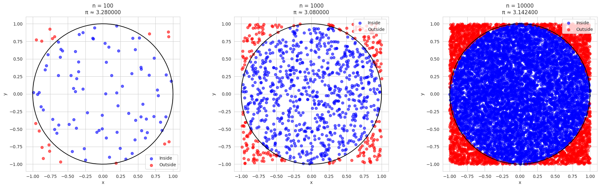
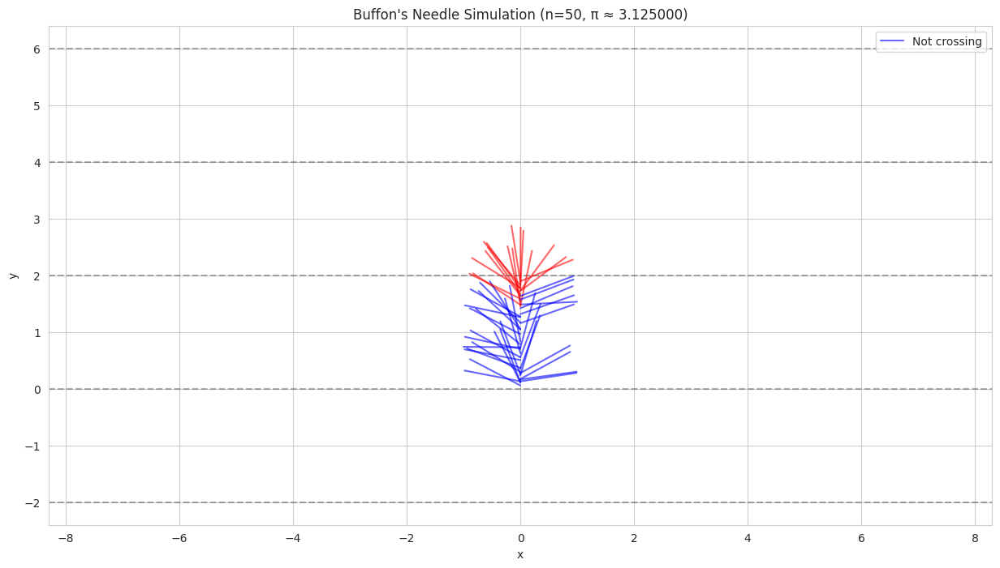
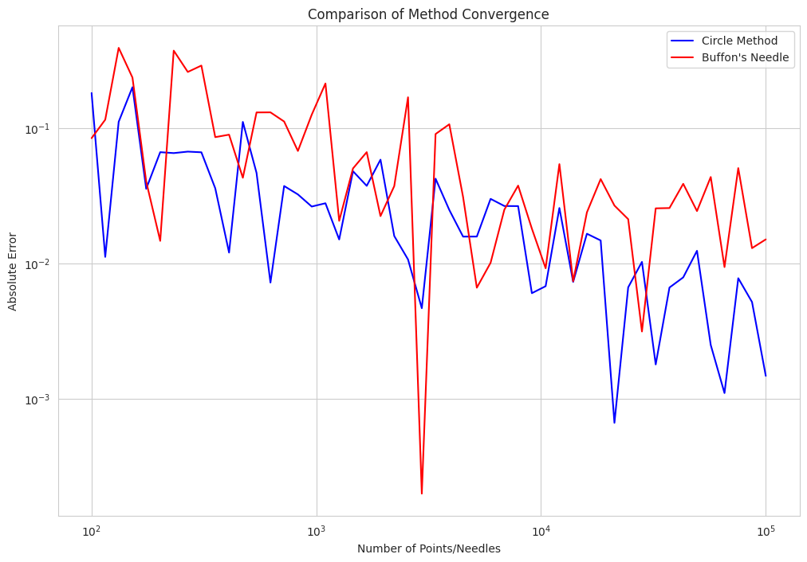
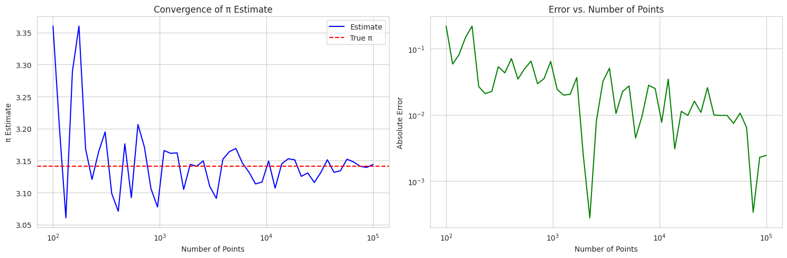
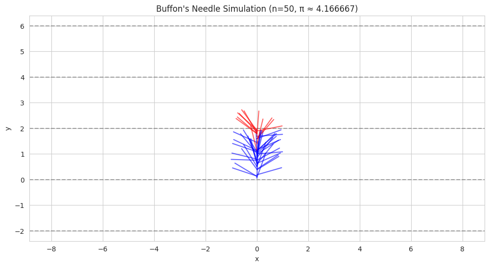
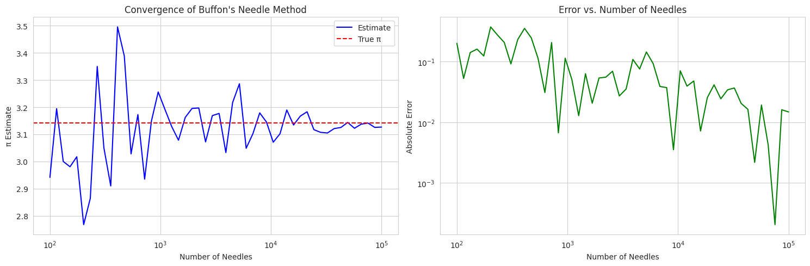
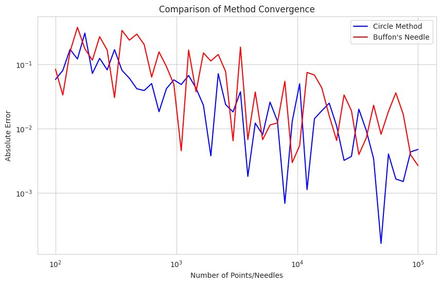

Problem 2
Estimating π using Monte Carlo Methods
1. Circle-Based Monte Carlo Method
1.1 Theoretical Foundation
The circle-based Monte Carlo method for estimating π relies on the relationship between the area of a circle and its circumscribed square. For a unit circle (radius = 1) centered at the origin:
- Circle area: \(A_c = \pi r^2 = \pi\)
- Square area: \(A_s = (2r)^2 = 4\)
The ratio of these areas is:
Therefore:
Let's implement this in Python:
# Basic imports - no external dependencies
import numpy as np
import matplotlib.pyplot as plt
# Set random seed for reproducibility
np.random.seed(42)
def estimate_pi_circle(n_points):
"""
Estimate π using the circle method.
"""
# Generate random points
x = np.random.uniform(-1, 1, n_points)
y = np.random.uniform(-1, 1, n_points)
# Calculate distances from origin
distances = np.sqrt(x**2 + y**2)
# Count points inside circle
inside_circle = np.sum(distances <= 1)
# Estimate pi
pi_estimate = 4 * inside_circle / n_points
return pi_estimate, x, y, distances
def plot_circle_method():
"""
Create visualization for the circle method with different sample sizes.
"""
sample_sizes = [100, 1000, 10000]
fig, axes = plt.subplots(1, 3, figsize=(20, 6))
for i, n in enumerate(sample_sizes):
pi_est, x, y, distances = estimate_pi_circle(n)
# Plot points
inside = distances <= 1
axes[i].scatter(x[inside], y[inside], c='blue', alpha=0.6, label='Inside')
axes[i].scatter(x[~inside], y[~inside], c='red', alpha=0.6, label='Outside')
# Draw circle
theta = np.linspace(0, 2*np.pi, 100)
axes[i].plot(np.cos(theta), np.sin(theta), 'k-')
axes[i].set_aspect('equal')
axes[i].grid(True)
axes[i].set_title(f'n = {n}\nπ ≈ {pi_est:.6f}')
axes[i].legend()
axes[i].set_xlabel('x')
axes[i].set_ylabel('y')
plt.tight_layout()
plt.show()
def simulate_buffon_needle(n_needles, L=1, D=2):
"""
Simulate Buffon's needle experiment.
"""
# Random positions and angles
y = np.random.uniform(0, D, n_needles)
theta = np.random.uniform(0, np.pi, n_needles)
# Calculate needle endpoints
y2 = y + L * np.sin(theta)
# Count crossings
crossings = np.sum(np.floor(y/D) != np.floor(y2/D))
# Estimate pi
pi_estimate = (2 * L * n_needles) / (D * crossings) if crossings > 0 else np.inf
return pi_estimate, y, theta
def plot_buffon_needles(n_needles=50):
"""
Visualize Buffon's needle experiment.
"""
L, D = 1, 2
pi_est, y, theta = simulate_buffon_needle(n_needles, L, D)
# Calculate needle endpoints
x = np.zeros(n_needles)
y1 = y
x2 = L * np.cos(theta)
y2 = y + L * np.sin(theta)
plt.figure(figsize=(15, 8))
# Draw parallel lines
for i in range(-1, 4):
plt.axhline(y=i*D, color='k', linestyle='--', alpha=0.3)
# Draw needles
for i in range(n_needles):
crosses = np.floor(y1[i]/D) != np.floor(y2[i]/D)
color = 'red' if crosses else 'blue'
plt.plot([x[i], x2[i]], [y1[i], y2[i]], color=color, alpha=0.6,
label='Crossing' if crosses and i == 0 else 'Not crossing' if not crosses and i == 0 else "")
plt.title(f'Buffon\'s Needle Simulation (n={n_needles}, π ≈ {pi_est:.6f})')
plt.xlabel('x')
plt.ylabel('y')
plt.axis('equal')
plt.grid(True)
plt.legend()
plt.show()
def compare_methods(max_points=5, steps=50):
"""
Compare convergence of both methods.
"""
points = np.logspace(2, max_points, steps, dtype=int)
circle_errors = []
buffon_errors = []
for n in points:
# Circle method
pi_est_circle, _, _, _ = estimate_pi_circle(n)
circle_errors.append(abs(pi_est_circle - np.pi))
# Buffon's needle method
pi_est_buffon, _, _ = simulate_buffon_needle(n)
if pi_est_buffon != np.inf:
buffon_errors.append(abs(pi_est_buffon - np.pi))
else:
buffon_errors.append(np.nan)
plt.figure(figsize=(12, 8))
plt.loglog(points, circle_errors, 'b-', label='Circle Method')
plt.loglog(points, buffon_errors, 'r-', label='Buffon\'s Needle')
plt.grid(True)
plt.xlabel('Number of Points/Needles')
plt.ylabel('Absolute Error')
plt.title('Comparison of Method Convergence')
plt.legend()
plt.show()
# Run all simulations
print("Starting Monte Carlo π estimation...")
print("\nCircle Method Visualization:")
plot_circle_method()
print("\nBuffon's Needle Visualization:")
plot_buffon_needles()
print("\nMethod Comparison:")
compare_methods()
print("\nAll simulations completed!")



1.2 Convergence Analysis
Let's analyze how the estimate converges as we increase the number of points:
def convergence_analysis(max_points, steps):
points = np.logspace(2, max_points, steps, dtype=int)
estimates = []
errors = []
for n in points:
pi_est, _, _, _ = estimate_pi_circle(n)
estimates.append(pi_est)
errors.append(abs(pi_est - np.pi))
return points, estimates, errors
# Perform analysis
points, estimates, errors = convergence_analysis(5, 50)
# Plot results
fig, (ax1, ax2) = plt.subplots(1, 2, figsize=(15, 5))
# Estimates plot
ax1.semilogx(points, estimates, 'b-', label='Estimate')
ax1.axhline(y=np.pi, color='r', linestyle='--', label='True π')
ax1.grid(True)
ax1.set_xlabel('Number of Points')
ax1.set_ylabel('π Estimate')
ax1.legend()
ax1.set_title('Convergence of π Estimate')
# Error plot
ax2.loglog(points, errors, 'g-')
ax2.grid(True)
ax2.set_xlabel('Number of Points')
ax2.set_ylabel('Absolute Error')
ax2.set_title('Error vs. Number of Points')
plt.tight_layout()
plt.show()

2. Buffon's Needle Method
2.1 Theoretical Foundation
Buffon's Needle problem involves dropping needles of length L onto a plane with parallel lines spaced distance D apart. The probability of a needle crossing a line is:
Therefore:
Let's implement this method:
def simulate_buffon_needle(n_needles, L=1, D=2):
# Random positions and angles
y = np.random.uniform(0, D, n_needles)
theta = np.random.uniform(0, np.pi, n_needles)
# Calculate needle endpoints
y2 = y + L * np.sin(theta)
# Count crossings
crossings = np.sum(np.floor(y/D) != np.floor(y2/D))
# Estimate pi
pi_estimate = (2 * L * n_needles) / (D * crossings) if crossings > 0 else np.inf
return pi_estimate, y, theta
def plot_buffon_needles(n_needles=50):
L, D = 1, 2
pi_est, y, theta = simulate_buffon_needle(n_needles, L, D)
# Calculate needle endpoints
x = np.zeros(n_needles)
y1 = y
x2 = L * np.cos(theta)
y2 = y + L * np.sin(theta)
# Plot
plt.figure(figsize=(12, 6))
# Draw parallel lines
for i in range(-1, 4):
plt.axhline(y=i*D, color='k', linestyle='--', alpha=0.3)
# Draw needles
for i in range(n_needles):
crosses = np.floor(y1[i]/D) != np.floor(y2[i]/D)
color = 'red' if crosses else 'blue'
plt.plot([x[i], x2[i]], [y1[i], y2[i]], color=color, alpha=0.6)
plt.title(f'Buffon\'s Needle Simulation (n={n_needles}, π ≈ {pi_est:.6f})')
plt.xlabel('x')
plt.ylabel('y')
plt.axis('equal')
plt.grid(True)
plt.show()
# Visualize Buffon's needle simulation
plot_buffon_needles(50)

2.2 Convergence Analysis for Buffon's Needle
Let's analyze the convergence of the Buffon's needle method:
def buffon_convergence_analysis(max_points, steps):
points = np.logspace(2, max_points, steps, dtype=int)
estimates = []
errors = []
for n in points:
pi_est, _, _ = simulate_buffon_needle(n)
if pi_est != np.inf:
estimates.append(pi_est)
errors.append(abs(pi_est - np.pi))
else:
estimates.append(np.nan)
errors.append(np.nan)
return points, estimates, errors
# Perform analysis
points, estimates, errors = buffon_convergence_analysis(5, 50)
# Plot results
fig, (ax1, ax2) = plt.subplots(1, 2, figsize=(15, 5))
# Estimates plot
ax1.semilogx(points, estimates, 'b-', label='Estimate')
ax1.axhline(y=np.pi, color='r', linestyle='--', label='True π')
ax1.grid(True)
ax1.set_xlabel('Number of Needles')
ax1.set_ylabel('π Estimate')
ax1.legend()
ax1.set_title('Convergence of Buffon\'s Needle Method')
# Error plot
ax2.loglog(points, errors, 'g-')
ax2.grid(True)
ax2.set_xlabel('Number of Needles')
ax2.set_ylabel('Absolute Error')
ax2.set_title('Error vs. Number of Needles')
plt.tight_layout()
plt.show()

3. Comparison of Methods
Let's compare the convergence rates of both methods:
def compare_methods(max_points=5, steps=50):
points = np.logspace(2, max_points, steps, dtype=int)
circle_errors = []
buffon_errors = []
for n in points:
# Circle method
pi_est_circle, _, _, _ = estimate_pi_circle(n)
circle_errors.append(abs(pi_est_circle - np.pi))
# Buffon's needle method
pi_est_buffon, _, _ = simulate_buffon_needle(n)
if pi_est_buffon != np.inf:
buffon_errors.append(abs(pi_est_buffon - np.pi))
else:
buffon_errors.append(np.nan)
plt.figure(figsize=(10, 6))
plt.loglog(points, circle_errors, 'b-', label='Circle Method')
plt.loglog(points, buffon_errors, 'r-', label='Buffon\'s Needle')
plt.grid(True)
plt.xlabel('Number of Points/Needles')
plt.ylabel('Absolute Error')
plt.title('Comparison of Method Convergence')
plt.legend()
plt.show()
compare_methods()

4. Conclusions
- Convergence Rate:
- The circle method generally shows more stable convergence
-
Buffon's needle method has higher variance in its estimates
-
Computational Efficiency:
- Circle method is simpler to implement and computationally lighter
-
Buffon's needle requires more complex geometric calculations
-
Practical Considerations:
- Both methods demonstrate the power of Monte Carlo techniques
- The circle method is more suitable for educational purposes
- Buffon's needle provides an interesting historical and geometric perspective
5. Applications
- Random number generation testing
- Introduction to Monte Carlo methods
- Teaching probability and geometric concepts
- Demonstration of law of large numbers
The Monte Carlo estimation of π serves as an excellent introduction to computational methods in physics and mathematics, demonstrating how random sampling can be used to solve deterministic problems.